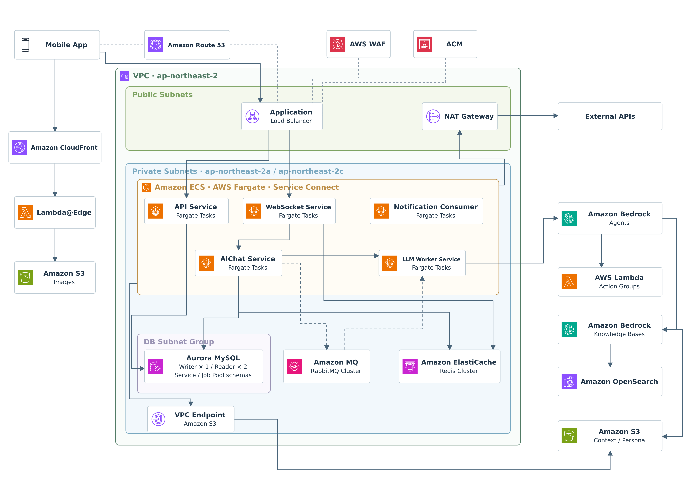

INFRA / CLOUD / AUTOMATION
주요 프로젝트
구조와 선택, 그리고 바뀐 결과
대파, AI 채팅 서비스 인프라
멀티에이전트 서비스를 실행하는 AWS 환경과 배포 구성
Amazon Bedrock · Aurora 02
AWS 비용 약 66% 절감
사용 자원, 실행 환경, RI·SP 약정을 함께 검토한 사례
Reserved Instances · Savings Plans 03
운영 작업을 도구로 구현
네트워크·비용 이상 감지와 정기 점검 자동화
AI-assisted development
FEATURED CASE STUDY
구성도 뒤에 있는
설계 선택을 설명합니다.
환경별 ALB 공유, 서비스별 Fargate 분리, Service Connect와 Aurora 스키마 분리. 대파 프로젝트에서 실제로 구성한 방식과 그 경계를 기록했습니다.
설계 선택 보기
ABOUT
변호진
6년간 네트워크와 서버, 클라우드 환경을 구축·운영했습니다. 배포 자동화와 정보보호 업무를 함께 맡으며 서비스가 돌아가는 환경 전반을 다뤄 왔습니다.
AWS Certified Solutions Architect – Professional
Linux · Windows · Networking · Terraform · CI/CD